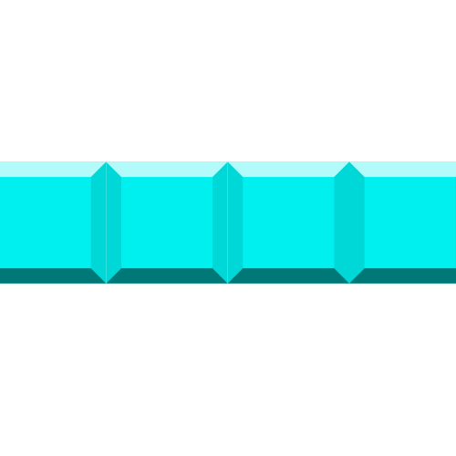
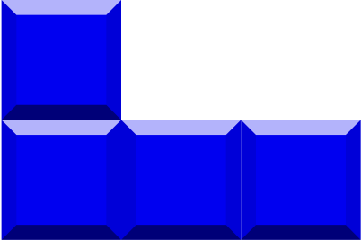
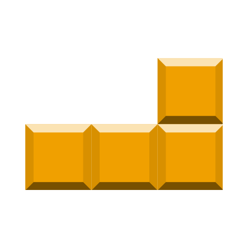
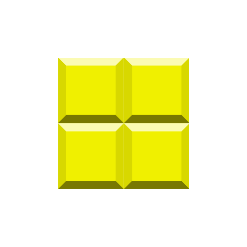
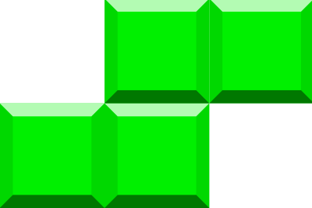
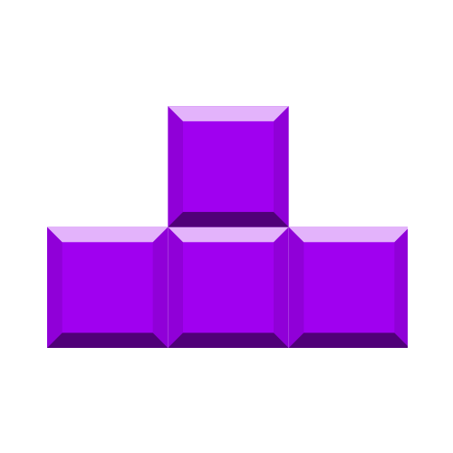
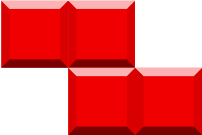

<!DOCTYPE html>
<html lang="en">

<head>
    <meta charset="UTF-8">
    <title>Tetris</title>
    <link href="https://fonts.googleapis.com/css?family=Molengo" rel="stylesheet">
    <link href="https://fonts.googleapis.com/css?family=Ubuntu" rel="stylesheet" type="text/css">
    <link rel="stylesheet" type="text/css" href="css/style.css" />
    <script src="https://ajax.googleapis.com/ajax/libs/jquery/3.1.1/jquery.min.js"></script>
</head>

<body>
    <div class="wrap">
        <header>
            
        </header>

        <div class="container">

            <div class="game-window">
                <canvas id="tetris"></canvas>
            </div>

            <aside>
                <section id="Score">
                    <div class="nextBlock">
                        <div class="nextBlock__img">
                            
                            
                            
                            
                            
                            
                            
                        </div>
                    </div>

                    <div class="score">
                        <h2>Score: <span id="totalScore">0</span></h2>
                        <h2>Level: <span id="currentLevel">1</span></h2>
                        <h2>Best: <span id="bestScore">0</span></h2>
                    </div>
                </section>

                <section class="game-controls">
                    <button id="newGame" type="start">New game</button>
                    <button id="pause" type="start">Pause</button>
                    <button id="help" type="start">?</button>
                </section>

                <section id="instructions">
                    <h3>How to play </h3>
                    <p>Move block: keyboard arrows left ← and → right</p>
                    <p>Rotate: keyboard arrow up ↑</p>
                    <p>Fast down: keyboard arrow down ↓ </p>
                    <p>Land down: Spacebar</p>
                    <p>Pause: keyboard Esc</p>
                </section>

                <footer>
                    <p>Created by : <a href="https://github.com/purlantov/Team-Porto.Flip-TA-2017" target="_blank">Team Porto Filip</a></p>
                    <p>Telerik Academy Season 8 (2016-2017)</p>
                </footer>
            </aside>

            <script src="js/blocks.js"></script>
            <script src="js/draw.js"></script>
            <script src="js/piece-drop.js"></script>
            <script src="js/piece-move.js"></script>
            <script src="js/scores.js"></script>
            <script src="js/main.js"></script>
        </div>
    </div>
</body>

</html>
